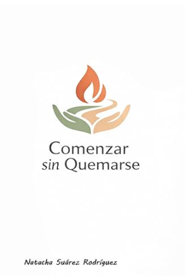

Programa de Acompañamiento
Comenzar Sin Quemarse
Acompañamiento para veterinarios en los primeros años de profesión
🎯¿Por qué nace este programa?
Los primeros años en veterinaria suelen venir acompañados de inseguridad, miedo a equivocarse y sobrecarga emocional. Aunque la formación técnica es sólida, la parte emocional y profesional del ejercicio clínico rara vez se acompaña.
Este programa nace para sostener ese inicio profesional de forma más consciente, humana y sostenible.
Inseguridad profesional
Miedo a equivocarse
Sobrecarga emocional
Dificultad para poner límites
Sensación de no estar preparado
💡¿Qué es "Comenzar Sin Quemarse"?
Un espacio grupal de acompañamiento profesional donde poder:
- Poner palabras a lo que ocurre al empezar
- Ordenar experiencias clínicas
- Comprender los patrones emocionales del ejercicio veterinario
- Desarrollar criterio profesional propio
¿Qué NO es?
✗ No es un curso técnico
✗ No es terapia
Es acompañamiento profesional desde la experiencia clínica y la mirada sistémica.
📋Formato del Programa
8Semanas de duración
15-20Participantes máximo
💻 Online en directo
🗂️Estructura del Programa
1
Aterrizar en la profesión
Revisar expectativas con las que se empieza, entender el impacto del inicio profesional, normalizar la sensación de inseguridad
2
Identidad profesional
Diferenciar ser profesional de rendir, construir una identidad profesional propia, reducir la dependencia de validación externa
3
Gestión emocional en clínica
Aprender a sostener situaciones habituales: guardias, errores clínicos, eutanasias, conflictos con clientes y carga emocional acumulada
4
Límites, responsabilidad y culpa
Explorar el exceso de responsabilidad, dificultad para poner límites y la culpa asociada al cuidado de animales y clientes
5
Comunicación y relaciones
Mejorar la relación con clientes, compañeros y responsables. Aprender a pedir ayuda, sostener conversaciones difíciles y comunicarse con claridad
6
Ritmo, cansancio y autocuidado real
Reconocer señales tempranas de desgaste, revisar el concepto de autocuidado y aplicar estrategias realistas dentro del trabajo clínico
7
Criterio y toma de decisiones
Desarrollar criterio clínico propio, tomar decisiones con más calma y reducir decisiones basadas en miedo o autoexigencia
8
Integración y proyección
Integrar aprendizajes del proceso, definir cómo continuar la práctica profesional y proyectar un ejercicio veterinario más sostenible
👥¿Para quién es?
Veterinarios y veterinarias que:
- Están empezando su carrera
- Tienen menos de 5 años de experiencia
- Sienten inseguridad o desgaste
- Quieren ejercer sin perderse a sí mismos
✨Resultados Esperados
📈Mayor comprensión del inicio profesional
🧘Reducción de la autoexigencia desadaptativa
💚Mejor gestión emocional en clínica
🔍Mayor claridad profesional
🌱Ejercicio más sostenible
👩⚕️Quién Facilita

Natacha Suárez Rodríguez
Veterinaria Clínica • Formadora y Divulgadora
Empezar la profesión no debería implicar quemarse.
📖
También disponible: el libro

Programa Online de 8 Semanas • Plazas Limitadas
¿Listo para comenzar sin quemarte?
Grupo reducido • Espacio seguro y confidencial
📅 Inicio del primer grupo: 30 de abril de 2026
Comprar AhoraReserva tu plaza